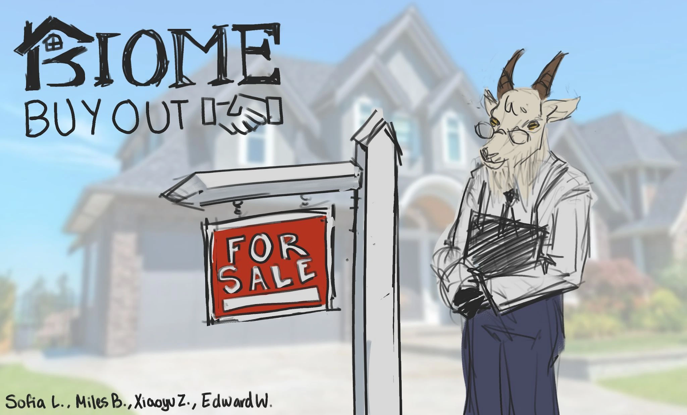

Biome Buyout.
Game Designer · Director
Type
Board game
Team
4 people
Timeline
October–November 2025
A four-player strategy board game where animal real estate factions use unique abilities and tetromino tiles to compete for land.

Factions & abilities
Next projectOverdrawn